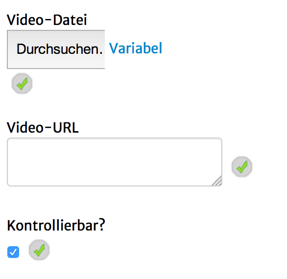

Mit diesem Seitentyp ist es möglich ein Video auf den Mobilgeräten abzuspielen. Es gibt keine Vorschau im Editor.
ACHTUNG! Das Video muss auf einem eigenen Server hochgeladen werden und darf nicht direkt im geoquest-Editor hochgeladen werden.
(Die Möglichkeit wird bald entfernt.)
Folgende Einstellungsmöglichkeiten gibt es für diesen Seitentyp:
|  | Video-Datei: Die Video-Datei auf einem eigenen Server. Klicke zum Eintragen zunächst auf "Variabel" und gebe die URL zu deiner Datei dann in das Textfeld ein. Video-URL: wird aktuell ignoriert! Bitte benutze den "Variabel"-Modus des "Video-Datei"-Feldes. Kontrollierbar?: wird aktuell ignoriert |